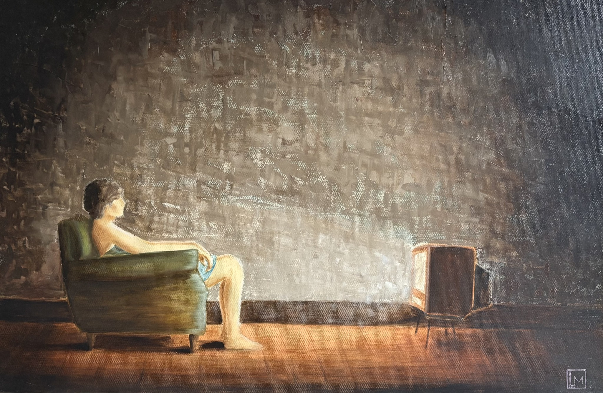

Kunstschilder
Lucas Maes
“Wanneer de eerste streep verf je canvas raakt, is alles en iedereen met je mee in je werkplaats.Klik op het werk voor meer info ↓
Het verleden, je vrienden, je zorgen, je begrip over kunst en vooral je eigenzinnige ideeën... alles is aanwezig.
Maar vanaf het moment dat je start met schilderen, begint alles te verdwijnen... één voor één.
Tot het moment dat jij en je werk nog alleen zijn.
En dan... als je geluk hebt... kom je tot rust...
en raak je jezelf ook even kwijt!”
Portfolio
Schilderijen
Schetsboek
Schetsen
Studies, observaties en ideeën op papier.
Nieuws & verhalen
Blog
Neem contact op